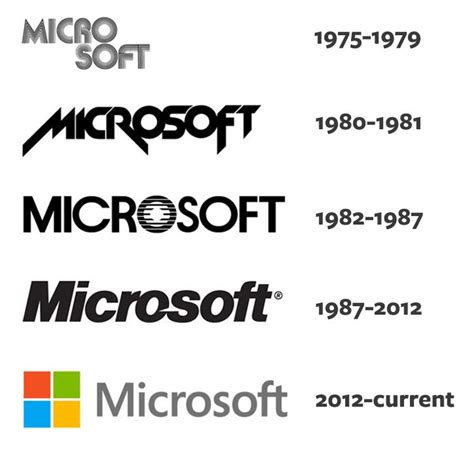

Les 4 entreprises étudié ; Microsoft.
|  |
|---|
La culture d’entreprise définie par M. Thévenet : M. Thévenet décrit la culture d’entreprise par un ensemble de définitions : « C’est un ciment qui relie l’ensemble des composantes de l’entreprise ; C’est une explication fondamentale de ce qui s’y déroule ; C’est le produit d’une histoire et pas seulement d’un instantané ; C’est un patrimoine de savoir-faire, façons d’agir et de penser, visions communes ; C’est un mode de description de l’organisation … ». La culture de l'entreprise permet de : Maintenir une cohésion au sein de l’entreprise ; le personnel autour du nom, des produits, des services, des clients, de l'image de marque..., permet de devenir un facteur de performance en rassemblant le personnel, en le motivant. permettant aux futurs collaborateurs de se reconnaître dans ce que l'entreprise présente comme son identité. Les limites de la culture d'entreprise : le cas d'une culture d'entreprise trop forte : qui peut mener les membres de l'organisation à une myopie envers le marché. Une "culture du succès" pourrait ainsi inhiber certains réflexes de survie et entraîner l'entreprise dans des projets dangereux pour son avenir
|
Ici nous avons Bill Gate, une des plus grande figure de l’informatique car aujourd’hui il est le fondateur de microsoft qui est de partout tout comme apple, quand on pense a l’informatique on pense directement a ce personnage. (Dans cette entreprise tout comme la plupart des entreprises travaillant dans l’ia, on y remarque un management assez libre au sein de l’entreprise, tant que les employés remplissent leurs tâches.) |
|---|